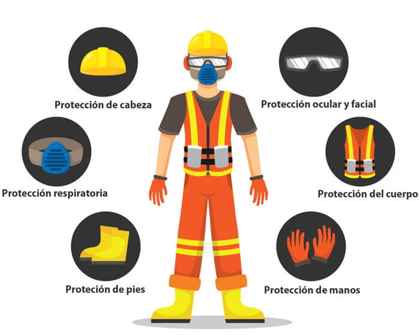
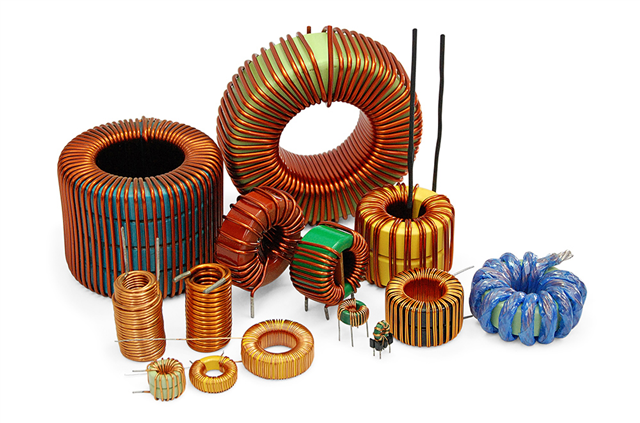
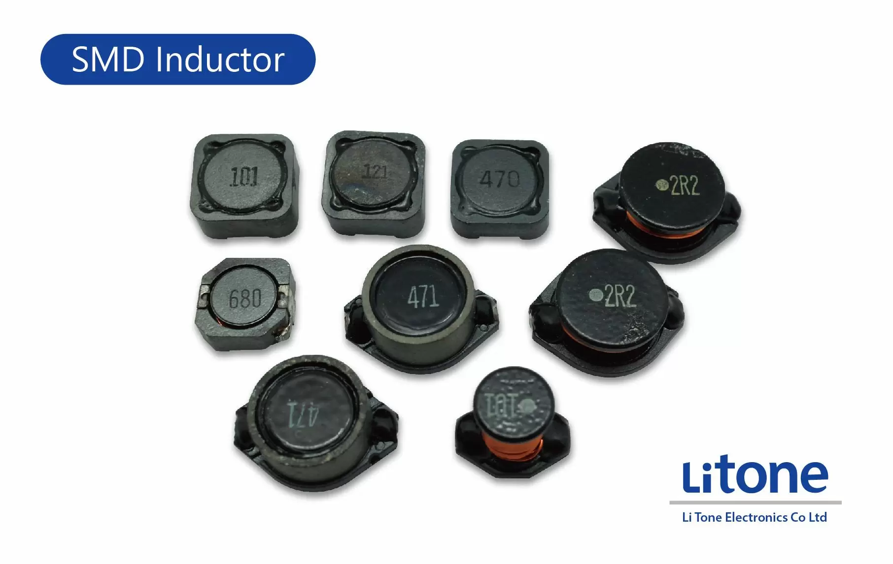
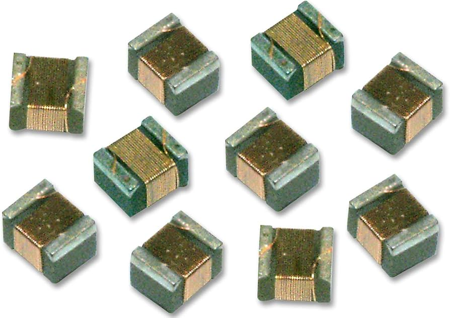

Microelectrónica para Técnicos Nivel 0
Created by sanchezluys
Introducción
Metodología
Teoria: Revisión de los conceptos teóricos del tema en estudio
Laboratorio: prácticas guiadas en el manejo de herramientas para medición y mantenimiento de componentes electrónicos
Microelectrónica - componentes discretos y los tipo SMD o de montaje superficial
herramientas y Recursos
Aplicaciones para el Celular
SMD Decoder Info
Resistencias - Capacitores - Inductores
Electrodoc
Resistencias - Capacitores - Inductores - Diodos - Conectores - Calculos Basicos - Filtros
All DataSheet
Hoja de Fabricante de Semiconductores
Lupa
Uso de la camara del celular como microscopio
IA - Inteligencia Artificial Generativa
- ChatGPT
- Copilot
- Gemini
- LuzIA Apk
- Claude.ia
Teoria
Repaso de conceptos fundamentales para entender el voltaje, la corriente, la resistencia y la potencia
Ley de Moore
“...aproximadamente cada 2 años se duplica el número de transistores en un microprocesador....”
Modelo del Atomo
Modelo de Rutherford - Nucleo - electrones - orbitales
Energía
- Luz (Intensidad luminosa - candela, cd)
- Electricidad (Corriente eléctrica - amperio, A)
- Ondas (Frecuencia - hercio, Hz)
- Reacciones Químicas (Cantidad de sustancia - mol)
- Magnética (Campo magnético - tesla, T)
- Electromagnética (Intensidad del campo electromagnético - voltio por metro, V/m)
- Radioactividad (Actividad radiactiva - becquerel, Bq)
- Nuclear (Energía - julio, J)
- Sónica (Presión sonora - pascal, Pa)
- Iónica (Carga eléctrica - culombio, C)
- Metabólica (Tasa metabólica - julios por segundo, J/s)
- Mecánica (Fuerza - newton, N)
- Calor (Energía térmica - julio, J)
- Potencia (Potencia - vatio o watt, W)
Electricidad
Movimiento de electrónes
Ley de Ohm
Ley de Ohm - Unidades Fisicas
| ⚡ Voltaje | üîå Corriente | üõë Resistencia |
|---|---|---|
| Fuerza con que los electrones son empujados | Cantidad de electrones que se mueven a través de un Material | Fuerza que se opone al paso de los electrones |
| Voltios | Amperios | Ohmios |
| V ⚡ | A üîå | ùû® üõë |
⚡ Ley de Ohm - Materiales üîç
| üîã Conductor | üö´ Aislante | üîÄ Semiconductor |
|---|---|---|
| Permite el paso fácil de los electrones | Material que no deja pasar electrones fácilmente | Según ciertas condiciones, permite o no el paso de electrones |
|
Oro Cobre Aluminio Hierro Níquel Zinc Plomo Platino |
Cerámica Vidrio Plástico Papel Madera |
Silicio Germanio Arseniuro de Galio (GaAs) Azufre Oxígeno Cadmio Selenio Indio |
⚡ Ley de Ohm - Materiales Plus üîç
| üîã Super Conductores | üö´ Super Aisladores |
|---|---|
| Bajo ciertas condiciones su resistencia es casi cero | Bajo ciertas condiciones su resistencia al paso de electrones es un número muy grande |
|
Carbono Cadmio Cromo Uranio Litio |
Silicon Aire Vacío |
⚡ Ley de Ohm - Ejercicios üîç
| üîã V-I-R | üö´ W |
|---|---|
| V=I*R I=V/R R=V/I | P=V*I |
Herramientas Básicas *Celulares*
Herramientas Básicas *Electrónica Potencia*
Herramientas Básicas *Electricidad*
Herramientas Básicas *Electrónica Vehiculos*
Herramientas Básicas *Instrumentación Industrial*
Herramientas Básicas *Multimetros*
Herramientas Básicas *Multimetros Smart*
Manuales de un Equipo Electrónico
Manual de Usuario
Caracteristicas - Usos - Manejo Basico
Manual de Operación
Usado en equipos especializados - Montaje - Operacion - Cuidados
Manual de Garantia
Contrato - Condiciones - Excepciones
Manual de Servicio
Hecho por el fabricante
- Esquematico
- Servicio L0
- Servicio L1
- Diseño
Medidor ESR
Medidor ESR
Medidor ESR
Medidor ESR
Cuidados en la Electrónica
Estática
Electrónes acumulados - Efecto punta
Temperatura
Altas temperaturas - Calor - Recalentamiento
Humedad
Corrosion - Capacitancias - Cortos electricos
Polvo
Estática - Adiabatico - Mas Calor

Vibración mecánica
Movimiento - Oscilaciones - Frecuencia

Equipos de protección
EPP - Seguridad
Calor - Corriente - Voltaje
Componentes Básicos Resistor-Capacitor-Inductor
Símbolos Normas [IEC] [DIN] [ANSI]
Capacitores Discretos

Capacitores por material de construcción
Capacitores tipos
Capacitores SMD Aceite y Papel
Capacitores SMD Cerámicos
C: 18uF 6.3V 0805
Capacitores Medidas
Capacitores SMD Tantalio
Tomado de KhanAcademyEspañol
Midiendo Capacitancia
- Con ohmios - se carga y descarga
- Con capacímetro
- Con medidor ESR
- ⚠️ Siempre se debe descargar primero
- ⚠️ Riesgo Eléctrico
Carta de Fallas del Capacitor
| üö´ Falla | üìù Descripci√≥n | üîç Posibles Causas |
|---|---|---|
| Cortocircuito | El capacitor presenta una resistencia muy baja o nula entre sus terminales. |
|
| Capacidad Reducida | El valor de capacidad es menor al especificado. |
|
| Fugas de Corriente | El capacitor permite el paso de corriente continua. |
|
| Capacitor Abierto | El capacitor no presenta continuidad entre sus terminales. |
|
| Pérdida de Capacitancia | El capacitor pierde su capacidad de almacenar carga con el tiempo. |
|
| Sobrecalentamiento | El capacitor se calienta excesivamente durante su operación. |
|
| Explosión | El capacitor se rompe o explota. |
|
El Inductor - Bobina - Solenoide - Coil

Bobinas discretas
Bobinas discretas 2

Tipo de Bobinas

Modelos
Toroidales
Tipo SMD 1
Tipo SMD 2
Tipo SMD 3
Tipo SMD 4
Tipo SMD 5
Tipo SMD 6
Tipo SMD 7
Tipo SMD 8
Tomado de KhanAcademyEspañol
Midiendo Inductancias
- Por medición indirecta con Osciloscopio y Generador de señales
- Con Multímetro en escala de ohmios - Baja resistencia
- Con Inductómetro
- Con medidor ESR
- ⚠️ Siempre se debe descargar primero
- ⚠️ Riesgo Eléctrico
Carta de Fallas del Inductor
| ‚ö†Ô∏è Falla | üìù Descripci√≥n | üîç Posibles Causas |
|---|---|---|
| üî• Corto circuito | La bobina se calienta excesivamente y no funciona correctamente. |
- Aislamiento dañado. - Exceso de corriente. - Falla en el núcleo magnético. |
| üí® Sobrecalentamiento | La bobina se calienta pero no hay corto circuito, aunque puede afectar el rendimiento. |
- Sobrecarga de corriente. - Ventilación inadecuada. - Exceso de ciclos de trabajo. |
| üåÄ Vibraci√≥n excesiva | Se siente una vibraci√≥n constante al tacto o produce ruidos. |
- Montaje incorrecto. - Desgaste mecánico. - Resonancia magnética. |
| ⚡ Falla de aislamiento | Pérdida de aislamiento que causa chispas o ruido eléctrico. |
- Desgaste del aislamiento. - Sobrecargas continuas. - Humedad. |
| üîã P√©rdida de inductancia | La bobina no genera la inductancia esperada, afectando el circuito. |
- Cortocircuito en espiras. - Degradación del núcleo. - Desalineación del devanado. |
| üö´ Interrupci√≥n de circuito | La bobina deja de conducir corriente, interrumpiendo el flujo de energ√≠a. |
- Rotura de espiras. - Conexiones flojas. - Falla en terminales. |
| üí• Ruptura del núcleo | Da√±o f√≠sico visible en el núcleo magn√©tico de la bobina. |
- Golpes o daños mecánicos. - Sobrecargas térmicas. |
El Resistor - Resistencia
Bobinas discretas
Bobinas discretas 2
Tipo de Bobinas
Modelos
Toroidales
Tipo SMD 1
Tipo SMD 2
Tipo SMD 3
Tipo SMD 4
Tipo SMD 5
Tipo SMD 6
Tipo SMD 7
Tipo SMD 8
Auto-Animate
Pretty Code
import React, { useState } from 'react';
function Example() {
const [count, setCount] = useState(0);
return (
...
);
}
Code syntax highlighting courtesy of highlight.js.
With Animations
Tabla de Fallas Comunes de Capacitores
| üö´ Falla | üìù Descripci√≥n | üîç Posibles Causas |
|---|---|---|
| Cortocircuito | El capacitor presenta una resistencia muy baja o nula entre sus terminales. |
|
| Capacidad Reducida | El valor de capacidad es menor al especificado. |
|
| Fugas de Corriente | El capacitor permite el paso de corriente continua. |
|
| Capacitor Abierto | El capacitor no presenta continuidad entre sus terminales. |
|
| Pérdida de Capacitancia | El capacitor pierde su capacidad de almacenar carga con el tiempo. |
|
| Sobrecalentamiento | El capacitor se calienta excesivamente durante su operación. |
|
| Explosión | El capacitor se rompe o explota. |
|
Auto-Animate
Automatically animate matching elements across slides with Auto-Animate.
Auto-Animate
Auto-Animate
Touch Optimized
Presentations look great on touch devices, like mobile phones and tablets. Simply swipe through your slides.
Add the r-fit-text class to auto-size text
FIT TEXT
Fragments
Hit the next arrow...
... to step through ...
... a fragmented slide.
Fragment Styles
There's different types of fragments, like:
grow
shrink
fade-out
fade-right, up, down, left
fade-in-then-out
fade-in-then-semi-out
Highlight red blue green
Transition Styles
You can select from different transitions, like:
None -
Fade -
Slide -
Convex -
Concave -
Zoom
Themes
reveal.js comes with a few themes built in:
Black (default) -
White -
League -
Sky -
Beige -
Simple
Serif -
Blood -
Night -
Moon -
Solarized
Slide Backgrounds
Set data-background="#dddddd" on a slide to change the background color. All CSS color formats are supported.
Gradient Backgrounds
<section data-background-gradient=
"linear-gradient(to bottom, #ddd, #191919)">Image Backgrounds
<section data-background="image.png">Tiled Backgrounds
<section data-background="image.png" data-background-repeat="repeat" data-background-size="100px">Video Backgrounds
<section data-background-video="video.mp4,video.webm">... and GIFs!
Background Transitions
Different background transitions are available via the backgroundTransition option. This one's called "zoom".
Reveal.configure({ backgroundTransition: 'zoom' })Background Transitions
You can override background transitions per-slide.
<section data-background-transition="zoom">Iframe Backgrounds
Since reveal.js runs on the web, you can easily embed other web content. Try interacting with the page in the background.
Marvelous List
- No order here
- Or here
- Or here
- Or here
Fantastic Ordered List
- One is smaller than...
- Two is smaller than...
- Three!
Tabular Tables
| Item | Value | Quantity |
|---|---|---|
| Apples | $1 | 7 |
| Lemonade | $2 | 18 |
| Bread | $3 | 2 |
Clever Quotes
These guys come in two forms, inline: The nice thing about standards is that there are so many to choose from
and block:
“For years there has been a theory that millions of monkeys typing at random on millions of typewriters would reproduce the entire works of Shakespeare. The Internet has proven this theory to be untrue.”
Intergalactic Interconnections
You can link between slides internally, like this.
Speaker View
There's a speaker view. It includes a timer, preview of the upcoming slide as well as your speaker notes.
Press the S key to try it out.
Export to PDF
Presentations can be exported to PDF, here's an example:
Global State
Set data-state="something" on a slide and "something"
will be added as a class to the document element when the slide is open. This lets you
apply broader style changes, like switching the page background.
State Events
Additionally custom events can be triggered on a per slide basis by binding to the data-state name.
Reveal.on( 'customevent', function() {
console.log( '"customevent" has fired' );
} );
Take a Moment
Press B or . on your keyboard to pause the presentation. This is helpful when you're on stage and want to take distracting slides off the screen.
Much more
- Right-to-left support
- Extensive JavaScript API
- Auto-progression
- Parallax backgrounds
- Custom keyboard bindings